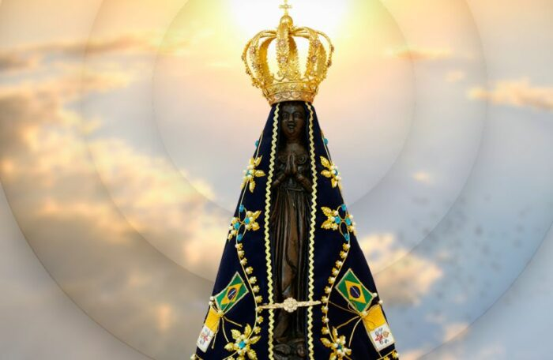

A imagem de terracota encontrada em outubro de 1717, por três pescadores no Rio Paraíba do Sul em São Paulo, foi conservada em uma pequena capela. Entretanto, a quantidade de romeiros atraídos pelos inúmeros relatos de milagres da imagem de Nossa Senhora foi tão grande que em pouco tempo o local se transformou em uma cidade: Aparecida do Norte.
Em 1868, a Princesa Isabel, que estava tendo dificuldades para ter um filho, foi até Aparecida pedir a intercessão da Mãe de Deus. Pouco tempo depois suas orações foram atendidas de forma abundante: a princesa teve três filhos, que garantiriam a sucessão imperial.